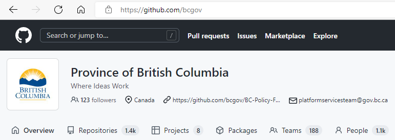
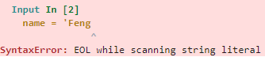
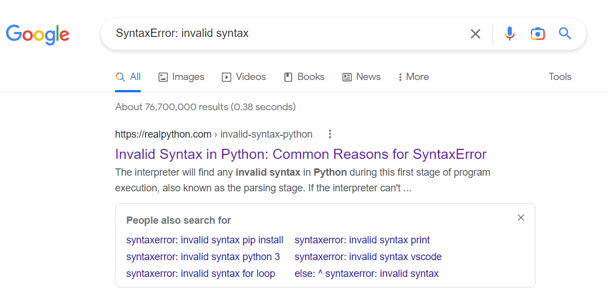
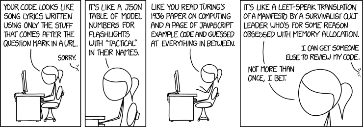

Most data projects consist of some version of a) finding some data, b) cleaning it up, and c) generating some insights. In an Excel world, all three stages often happen in a single document. Often over many tabs. Almost always with little documentation. If the project is purely “ask a one time question and get a one time answer and literally never need to look at the file again”, then this approach is arguably efficient and effective. But what if we want to update the insights over time or apply the question to a different dataset? What if someone wants to reproduce what we did? How about verify if what we did was valid or fix something that has gone wrong? These are some of the reasons why good file management practice is key to data project success.
Having a strategy ahead of time about how you organize your work when you are starting a project will pay handsome dividends, both for you and for anyone who will be accessing your work down the road. And when you use code (e.g. R or Python) to do a lot of the processing of the data in your project, it is unavoidable that you will have to make some decisions about how to manage your work, which includes managing your files.
Don’t be this guy!
Treat data as read only
One of the first things that you will do in a coding environment is to identify your data source and read or ingest that data into your environment to process it further. You should however, leave that originating data unaltered! Once the data is in your coding environment, that is where the processing will take place, and that process will end with some “improved” version of the data being produced.
Clean and analyse your data with code
In many cases your data will be “dirty”. That is to say, filled with missing data, spelling mistakes, duplicate records, data type errors, you name it! Your code will clean it. Once you have your clean data, your code will generate insights from it. All of this code (in our case, Python code) will take the form of scripts in separate files. All of these scripts should be stored in a folder separate from the original data itself.
Treat generated output as disposable
As you should be able to take the original data as well as the scripts to process it into something useful, you can recreate the outputs at any time. So while you might have a place where you store the processed data, you should treat it as disposable. Disposable essentially means reproducible. It is a bit like having a kitchen pantry with ingredients for making a cake along with the recipe to guide us through the steps to make it. We should be able to make the same cake over and over again with a stocked pantry and access to the recipe. But if we lose either the stocked pantry or the recipe, we won’t be able to make any more cake. As the chef treats the cake as edible, the data scientist treats the output (plots, data summaries, model results) as disposable.
Organize your files
While there is no perfect template for how to organize your work, below is an example that shows how you might consider organizing your work for a relatively straightforward data project. Let’s say we have a project that is about analyzing marmots in BC. MarmotsBC could be the top level directory, it is the project name, without spaces. Under this project the remaining files could be organized within the following structure:
/MarmotsBC top level directory,
│ contains project name, without spaces
│
└─── /docs supporting text and word processed documents
│ that are meant for humans to read
│
└─── /data the original (meta)data that acts as an input
│ and will be treated as read-only
│
└─── /src your scripts, may further be divided
│ into /functions, /test, etc.
│
└─── /bin programs brought in from elsewhere
│
└─── /output data written by your code to this location,
│ could be input for another process
│
└─── /analysis the charts, stats, figures and the like
generated from your scripts
Name and split files when needed
When you are naming files themselves, try to have the names reflect their content or function. You will also find that as your project grows, documents such as scripts may need to be split apart and renamed. For example, you might create some functions as you analyse your data in a single script. At some point you will likely want to create a separate script file just for the functions. When splitting, make sure you eliminate redundent content between files.
Version control
When working alone and especially when working within a team, it is helpful to leverage tools that help ensure that everyone’s work is kept up to date and organized. There are tools such as git/GitHub that are made precisely for this purpose. If you hear people talking about repos, merges, commits, pull requests, etc, they are probably talking about the git world. It is beyond the scope of this tutorial to dive into this topic, but it is something to keep in mind. Here is a good intro to all things “git”..

Where ideas work (and are kept organized and up-to-date)
Challenge 1
What are three activities associated with a project that are made more difficult and put at risk if project files are not kept well organized? Who is likely to be affected? Take three minutes or so working in groups of 3-4 people seated near you to come up with your responses.
Solution to Challenge 1
Activities that will be affected include:
interpreting outputs
fixing errors that arise
extending the project.
Existing or future team members will be most directly affected. Ultimately downstream users of the data may also be impacted.
Challenge 2
If output is generally considered the most usable thing for end-users of data, why should it be considered as disposable?
Solution to Challenge 2
Output can always be reproduced if the data itself and details about how the data is transformed (cleaned, munged, analyzed, etc.) is available. The loss of things that can be generated from data and code is not a serious risk to the project.
2.2 Getting coding help
Being effective with using python, or any other coding language, requires that you hone your self-serve skills. Coding requires that you are comfortable with asking and getting questions answered using a number of techniques. Here are a few to know and use.
Topical help
In whatever developing environment (sometimes called an IDE - Integrated Development Environment) you choose to work with, there are usually very helpful links readily available. In the Jupyter Lab environment, for example, you will find such help under the Help choice in the top menu.
Finding Jupyter Lab’s Help
When you click on Help you see an expanded range of topics:
Topical Help at your fingertips
Under the topics listed you will find treasure troves of helpful documentation relating to Python. Whether you are relatively new to the language or have years of experience already with it, one of the most helpful sections you will find there is Python Reference:
Official Python Documentation
Each section provides useful content that is related to the version of Python you are working with! One of the particularly helpful sections for those new to Python is the Tutorial section, where you will find tutorials on several of the topics in this course, plus many more.
Functions help
Functions in Python have excellent documentation that you should be able to access fairly readily. Below are screen shots from the Jupyter Notebook environment that show two distinct ways to access. The example below shows how to get detail about a specific function by calling help() function itself and passing in the name of the function of interest:
help(round) # Run code as normal to get help information
Help on built-in function round in module builtins:
round(number, ndigits=None)
Round a number to a given precision in decimal digits.
The return value is an integer if ndigits is omitted or None. Otherwise
the return value has the same type as the number. ndigits may be negative.
Within Jupyter environments, it is also possible to place the cursor inside the cell with the function and hit Shift-tab to get information:
round() # Shift-tab to get drop-down help in Jupyter
---------------------------------------------------------------------------TypeError Traceback (most recent call last)
Cell In[2], line 1----> 1round()# Shift-tab to get drop-down help in Jupyter TypeError: round() missing required argument 'number' (pos 1)
Syntax error help
When developing code, you will go through a process over and over where you write some code and then test it. If it works, you keep going, adding complexity and content to your code. But what happens if it does not work? Fortunately Python delivers some clues about what may have gone wrong.
Here are a couple of examples of syntax errors, where python is essentially saying “I don’t understand what you mean”!
# Forgot to close the quotation marks after the quotename ='Feng
Cell In[3], line 2 name = 'Feng
^
SyntaxError: EOL while scanning string literal

These kinds of errors are usually because of careless typing such as leaving off a quote or comma or bracket somewhere (or adding one too many).
# An extra '=' in the assignmentage ==52
Cell In[4], line 2 age = = 52
^
SyntaxError: invalid syntax
Syntax errors are generally mildly annoying, however, they are usually not too complex, and relatively easy to find and fix.
Runtime error help
Python reports also runtime errors, also sometimes called exceptions, which are thrown when something goes wrong while a program is executing. This is more like python saying “I understand what you are saying, but I am running into some trouble in doing what you are asking”.
Some common types of runtime errors when your code:
tries to divide something by zero
performs an operation on incompatible data types
uses an identifier which has not been defined
accesses a list element, dictionary value or object attribute which doesn’t exist
tries to access a file which doesn’t exist
In the example below, the code is telling python to import a package that is not yet installed.
# Python cannot find this libraryimport shap
---------------------------------------------------------------------------ModuleNotFoundError Traceback (most recent call last)
Cell In[5], line 2 1# Python cannot find this library----> 2importshapModuleNotFoundError: No module named 'shap'
In the example below, the issue is not a syntax error (although it might look like a typo that one might associate with being a syntax error).
age =54years_to_100 =100- aege # "misspelled" assigned variable called 'age'
---------------------------------------------------------------------------NameError Traceback (most recent call last)
Cell In[6], line 2 1 age =54----> 2 years_to_100 =100-aege# "misspelled" assigned variable called 'age'NameError: name 'aege' is not defined
The above examples introduce the concept of traceback, which is a way of helping the coder locate the origin of the error experienced. A traceback will show up in output that is to be read “from the bottom up”. In the above example, we see that the program does not recognize the object “aege” when it encounters it in cell line 2. Note that this does not necessarily mean that the problem should be fixed at the location indicated. In the above example, a reexamination of the code might reveal that the original name assigned was incorrectly spelled. Were that the case, then the original name assignment should be updated, not the reference to it in cell line 2.
Diving deeper
The first and best way to work though why your code failed is to look at the information provided at the bottom of the output. As in the examples above, much of the time you will have enough information there to give you some ideas about what the cause of the problem is and a starting point for modifying the code and running it again.
Many times, however, you will find that your code throws errors you still don’t understand. Other times, you would like to get a better understanding of some topic you have come across. For those moments, don’t be shy to use Google to get going by typing in the search field those terms that are narrow enough to describe your problem as succinctly as possible.
Global community and solutions to challenges or fixes for bugs
Among the more popular entries you’ll find on the search engine response page come from stackoverflow or other coding community sites, and from blogs or other sources. It may also pay to look at “videos” among your Google search responses and you will likely see many YouTube offerings of varying degrees of relevance. There is a whole ecosystem of python developers (polished and not-so-much) who offer content that may be of help. These are often very helpful.
Imagine we were working through the “SyntaxError: EOL while scanning string literal” error above. You know that it’s a syntax error, so you examine your code for something that does not look right based on what you know about writing code. What happens if you still are getting an error? Then a Google search might be helpful.

Error deep dive
The highlighted summary information shows us that it understands that we are referring to a python issue, not a general coding one. So that is a good sign. It summarizes from a page on the realpython.com site. Moreover it suggests different ways that others have extended the search that you might find helpful. While the suggested site itself is not an official python site, it nonetheless is a quality site about python that will likely be worthwhile to review. Once there, you will find more useful information.
Challenge 3
You want to find out what the print() function does. How would you look to answer this question? What does it do, does it send a print job to a printer?
Solution to Challenge 3
Use one of the two most efficient ways to obtain information
help(print) # One way to get the info
Help on built-in function print in module builtins:
print(...)
print(value, ..., sep=' ', end='\n', file=sys.stdout, flush=False)
Prints the values to a stream, or to sys.stdout by default.
Optional keyword arguments:
file: a file-like object (stream); defaults to the current sys.stdout.
sep: string inserted between values, default a space.
end: string appended after the last value, default a newline.
flush: whether to forcibly flush the stream.
print() # Shift-tab another way to get the info
Does not send to a physical printer! Prints the values passed into it to a stream or to an output (usually to output shown on a monitor).
Challenge 4
Someone asks you want the term “iterable” means in the context of a python function? How would you go about finding an answer? What does it mean?
Solution to Challenge 4
You could use help off of the menu. Might be quicker to do a Google search.
Iterable is an object which can be looped over or iterated over with the help of a for loop. Objects like lists, tuples, sets, dictionaries, strings, etc. are called iterables. In short and simpler terms, iterable is anything that you can loop over.
You may or may not know what “loops” are, but perhaps have heard of lists and such. Particularly at the beginning of your Python journey, there will be terms that you will not yet be familiar with that will show up in explanations of other things. Don’t worry! As with anything, this will occur less and less often over time.
2.3 Coding in style
Working with python can be challenging. When you are first learning it, there may seem to be so many different rules around using certain kinds of brackets (and not others) at certain times, rules around indenting lines, etc. Many of these rules result in your code refusing to run. Often your code may run, however, it may not necessarily be easy to follow for someone reading through it. In an enterprise environment, your code will likely be read and referenced by others, so making it easy to decipher is important!

Style matters!
Fortunately, there are some widely accepted guidelines about coding style that you should be aware of and strive towards over time. In the Python world, the style guide you should know about is “PEP8” which stands for Python Enhancements Proposals.
There are many specific rules in PEP8, here are some to be aware of from the start.
Comments
When coding, it is good practice to comment on code, but only when the code is likely to be non-obvious to others who are likely to review it. Comments are preceded by a “#”, which within Python, ensures that they are recognized as non-executable and therefore no threat to actually affecting your code. Below are two examples of how you can add comments to your code (if necessary).
# The bog standard first line of code learned in any languageprint("Hello World")print("Hello World") # New programmer's first code in any language
Hello World
Hello World
Spacing within code
There are a number of little conventions about spacing that just have to be learned. In the code below look at the comments that go along to see what is considered good style and what is considered good and what is not.
# Good, is a space on either side of the assignment operator a =print("hello") # Poor, as the assignment operator lacks spaces around ita=print("hello")
hello
hello
# Good, is no space between call and left parenthesisprint(2) # Poor, should be no space between call and left parenthesisprint (2)
2
2
Below are some examples of how to incorporate spaces when you have operators with different priorities (i.e. remember PEMDAS or BODMAS from high school?). In general, add space for those instances with lower priority:
# Good stylei = i +1x = x*2-1c = (a+b) * (a-b)# Poor stylei=i+1x = x *2-1c = (a + b) * (a - b)
There are many other conventions about spacing, but the ones above are some of the more common ones to watch out for.
Indentation
A line of code that completes a meaningful coherent action of some sort, is kind of like a complete sentence in grammar. As with sentences, a line of code can be short and sweet, long and convoluted, and anywhere in between. Where lines of code are longer than 79 characters, certain style guide rules come into play. The examples below show how to carry over content from one line to the next line.
# Good - aligned with opening delimeteranimals = animals.drop('weight', 'size', 'age', 'location', 'eye colour', 'intelligence', 'cost', 'number held in zoos')# Good - hanging indents (usually four spaces, should not use tabs)animals = animals.drop('weight', 'size', 'age', 'location', 'eye colour', 'intelligence', 'cost', 'number held in zoos')
It should be noted that many programmers use tabs instead of four spaces! While PEP8 is not a fan of tabbing, as this practice is widespread and effective, it is common to come across advocates. Mixing tabbing and individual spaces, however, may result in syntax errors being thrown. Also for multi-line constructs (such as those in the examples above), the closing brace/bracket/parenthesis may appear on the line under the last line code for the piece of code.
Blank lines
Blank lines should be used sparingly, but they can be used where appropriate. It can help your code “breath”! A general rule of thumb is that there should be a single blank row between blocks of code, and two blank rows between functions.
# Good - different kinds of coding elements together and separated by blank linesx = [1,2,3]y = [2,4,1]plt.plot(x, y)plt.xlabel('x - axis')plt.ylabel('y - axis')plt.title('My first graph!')plt.show()# Less good - harder for the eye to differentiate how the code is structuredx = [1,2,3]y = [2,4,1]plt.plot(x, y)plt.xlabel('x - axis')plt.ylabel('y - axis')plt.title('My first graph!')plt.show()
---------------------------------------------------------------------------NameError Traceback (most recent call last)
Cell In[12], line 5 2 x = [1,2,3]
3 y = [2,4,1]
----> 5plt.plot(x, y)
7 plt.xlabel('x - axis')
8 plt.ylabel('y - axis')
NameError: name 'plt' is not defined
One can ignore the error thrown above as we have not imported the needed package to get the code to run. What is to notice is how the different similar blocks of code are separated with blank lines to make it more readable.
Challenge 5
Based on what we have covered, what, if any are the style code issues.
# Example 1print (last_name) # Example 2celcius = (fahrenheit -32) /1.8# Example 3index = ['snail', 'pig', 'elephant', 'rabbit', 'giraffe', 'coyote', 'horse', 'giraffe', 'ping pong table']
Solution to Challenge 5
Example 1: there should be no space between the function call and the “(”
Example 2: there should be no space between “fahrenheit”, the “-” operator, and “32”
Example 3: line exceeds 79 characters so should be spaced over two lines
Consistency is sometimes more important than being right
All of the rules above are about coding the “right” or “correct” way. There are times when you can consider breaking, or at least bending some of the rules for the greater good of being “consistent”. This is especially the case when you are working on code as part of a project. Sometimes it is better to be consistent than right. This is often true if you are working on code as part of another project with some unique style practices. Keeping internally consistent with these practices will lead to overall greater readability, which is the greater goal of coding style.